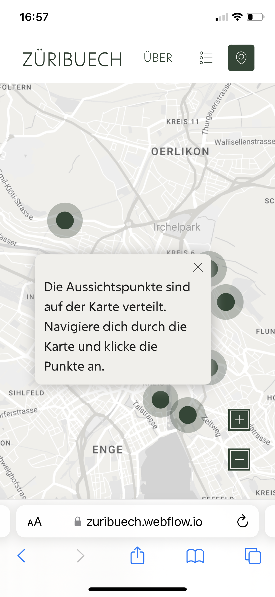
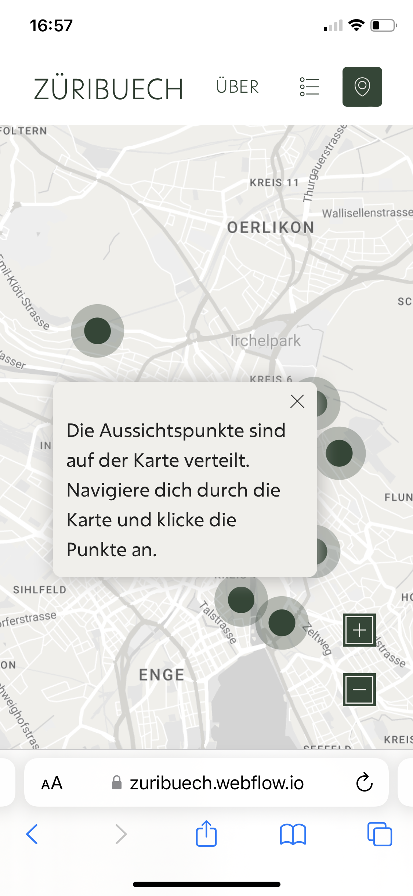

Die Map
Die Map war eine Knacknuss. Ich hatte mich zuerst gegen eine Map entschieden, wegen meinen technischen Möglichkeiten. Eine Map einzubinden ist nicht einfach. Nach der Ersten Besprechung des Low-Fi Prototype mit Timo Grossenbacher (Mentor), war klar, eine Karte ist essenziell. Der User soll sich in Zürich orientieren können. Ich habe mich nach dem Gespräch eine Woche lang intensiv mit dem Thema Map beschäftigt.
Es gibt diverse Anbieter, die eine Map Integration mit mehreren Marker für Webflow anbieten. Jedoch erfüllten diese nicht zu 100% meine Wünsche. Somit kam ich zum Entschluss, dass mit Webflow nur eine Custom Map in Frage kommt. Ich merkte schnell, dass ich Java Script (JS) brauche, damit beim Klick eines Marker, ein Pop-up erscheint. JS haben wir im Studium nie gelernt. Aus diesem Grund habe ich weiter gesucht und bin auf ein Projekt von Timothy Ricks gestossen. Dieses konnte ich Klonen und nach meinen Wünschen umstylen. Nun habe ich ein SVG im Hintergrund, die Map-Marker werden fix platziert und beim Klick erscheint ein Pop-Up.
Beim Testing erkannte ich, dass User ein sehr starkes Pattern im Kopf haben, wie sie mit einer Map umgehen. Dazu gehört das Zoomen mit zwei Fingern auf dem Tablet und Smartphone. Wegen die SVG-Map kann ich diese Funktion nicht anbieten. Um diesem Pattern etwas entgegen zu steuern, erstellte ich ein kleines Pop-up mit der Instruktion, wie auf der Map navigiert werden kann und ich hatte die Plus und Minus Buttons für den Zoom grösser dargestellt.
 
